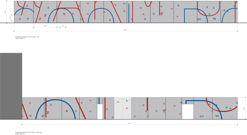
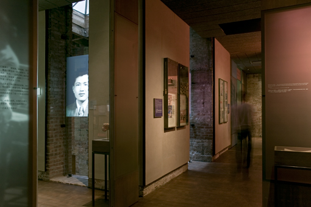
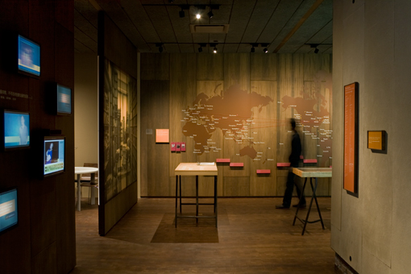

Citysalad - Expo 2
G.A.N.G. presenteert PROEFTUIN!
2 december 2011 t/m 8 januari 2012
De tuin vertegenwoordigt een plek waarin de wereld gekend en begrepen kan worden (prof. Erik A. de Jong)
G.A.N.G. presenteert een innovatief project waarmee de tuin in een nieuw daglicht komt te staan: PROEFTUIN. Terwijl de omgeving in deze tijd van het jaar in een winterslaap verkeerd zal in Showroom Arnhem van 2 december 2011 t/m 8 januari 2012 een bijzondere beeldende kunsttentoonstelling te zien zijn, waarin uiteenlopende professionele kunstenaars het fenomeen tuin vanuit verschillende perspectieven benaderen. (...)
Deelnemende Kunstenaars Proeftuin: Frank Bruggeman, Citysalad (Tanja Koning en Nele Vos), Club Donny (Samira Ben Laloua, Frank Bruggeman, Ernst van der Hoeven), Ksenia Galiaeva, Anne Geene, Eric Jan van de Geer, Joost van Hezewijk, Dorian Hiethaar en Robbie Lee Buck (Dorian Hiethaar en Ellen van Eldik), Peter Krynen, Jolanda Muilenburg, Zeger Reyers, Ester van de Wiel, Edwin Zwakman
2011 / Citysalad / non-profit / participation / self-initiated / sustainability / website / Exhibition
With one Eye - Expo
Design for Lens Based Media Exhibition in TENT Rotterdam. Photography by Jan Adriaans & Job Janssen
2011 / Tent. / international / Rotterdam / Exhibition


Warm Up Cool Down
A proposed identity and environmental graphics designed to accompany Matter Practice's architectural proposal for the PS1 Young Architecture Project.
2011 / architecture / Matter Practice / customized-font / New York City / international / Exhibition
PrintRoom
PrintRoom is a new presentation space and shop for artists� publications. First and foremost we will serve as an independent platform for artists, designers and small publishers from all over the globe. We want to research the possibilities within artists� publications, follow new developments, discuss, collect, invite people for talks and communicate to share this with a broader audience.
In the process of building the new headquarters interior we're now involved in the programming and selection process together with Manuela Porceddu and of course Karin de Jong, who started this former traveling collection in 2003.
2011 / interiour / non-profit / Rotterdam / participation / PrintRoom / Exhibition
Open Dans Festival
For the Open Dans Festival 2010 we installed a generative real time physical info graphic that highlighted the various dance stages, using tape as a primary material. This took place over a three day period divided into five performance phases. One color per day plus an over all color for performances taking place over all three days. The color system was also used on an information wall to provided information about each of the choreographers and their related dances and stage area.
LP2 at Las Palmas, Rotterdam.
2010 / interiour / Rotterdam / performance / timeline / Exhibition
Time is still, Papercuts
During the exhibition Magda Malina�s �Papercuts, How to Love the Moment� accessory collection was slowly destroyed and interchanged by a fold and bound representation showing the process of her work. This also included a template included to built an own accessory piece.
2009 / Dortmund / photography / timeline / Exhibition






MOCA
MOCA (Museum of Chinese in America): With A Single Step presents the journey of the first Chinese immigrants to the USA through present Chinese American heroes. Once the site of a machine shop, Maya Lin designed the new museum facility that expanded their space ten-fold. We designed the exhibition graphics of the permanent exhibition and collaborated with Matter Architecture Practice who did the exhibition design.
Designed at MGMT. design in collaboration with Matter Practice and Marcus Doshi Lighting Design
2009 / Matter Practice / New York City / interiour / international / Exhibition
Quay Brothers
Dormitorium: Film Decors by the Quay Brothers is an one room exhibition with extremely low light levels. The exhibition signage was designed to work within these conditions, the title sign and object indicators were laser cut black
MDF with a white MDF backing. This helped to illuminate the signage with little light. The introduction text was related to their films produced on a 35mm slide and projected.
Exhibition design: Matter Practice
2009 / Matter Practice / New York City / interiour / Exhibition
NPSF - Expo
New Practices San Francisco 2009 is the West Coasts premiere of the American Institute of Architecture New York�s annual portfolio competition and exhibition. The budget for this exhibition was minimal, we sourced materials with local building supply stores and asked them to donate the materials. The display system we created was made of metal peg board with a series of custom made clips and rope.
Exhibition design: Matter Practice
2009 / architecture / Matter Practice / environmental / New York City / interiour / Exhibition
Reading Matter
Produced in conjunction with a lecture and exhibition of Matter�s work. Reading Matter displayed small models and media loops of their projects throughout a flexible wall system. We developed for this exhibition a label system comprised of metal adhesive strips with embossed typography. Reflective neon signage was designed to accompany the color scheme of the installation.
2009 / architecture / Matter Practice / environmental / New York City / interiour / Exhibition
Munkacsi's Lost Archive
This exhibition held at ICP is a part of Extremely Hungary, a yearlong festival of performances and exhibitions in New York City and Washington, D.C., throughout 2009.
This exhibition was shown in the frame of ICP's Year of Fashion '09.
Designed at MGMT. Design
2009 / New York City / photography / Exhibition
In High Fashion
An exhibition of 175 works by Edward Steichen drawn largely from the Cond� Nast archives. This is the first presentation that gives serious consideration to the full range of Steichen�s fashion images. This exhibition was shown in the frame of ICP's Year of Fashion '09.
Designed at MGMT. Design
2009 / New York City / photography / Exhibition

This is not a Fashion Photograph.
This Is Not a Fashion Photograph, organized by guest
curator Vince Aletti, is an exhibition drawn largely from the permanent collection of ICP that looks at the non-fashion sources of contemporary fashion photography. Because many young fashion photographers are more interested in authenticity than artifice, they are looking closely at work by Weegee, Lisette Model, Andr� Kert�sz, and Danny Lyon.
This exhibition was shown in the frame of ICP's Year of Fashion '09.
Designed at MGMT. Design
2009 / New York City / photography / Exhibition
Disseny Hub Barcelona
OPEN LETTER:
There is a new design museum opening in Barcelona. We have been invited by the Fundacio Comunicacio Grafica de Barcelona (Graphic Communication Foundation of Barcelona) to design a booklet to celebrate the opening. This booklet will be one of a series produced by emerging young designers.
Our idea for this project is to ask designers from all over the world to participate in this event. We would to ask you to sketch a visual idea for the future museum's identity. In this way all these designers will be describing visually what a museum could be.
The 'sketches' will be collected and published in the booklet and will also be part of the Fundacio Comunicacio Grafica collection and exhibited when the museum opens. We think it will be nice that designers from all over the world will be involved in the birth of a new museum about design, and that these sketches will not necessarily be finished or complete but ideas in their infancy.
We hope you can take part.
With love,
Ariadna & Stephen
2008 / Barcelona / participation / publication / Exhibition
Darger-ism
The second installment of Henry Darger works at the American Folk Art Museum. Eleven artists were chosen to participate in this exhibition, parallels were drawn between Darger's works and the participating artists to show his continued influence.
A custom font was drawn for the show.
Designed at MGMT. Design
2008 / customized-font / environmental / New York City / Exhibition
Central Bar
A wall mural for the Central Bar located on 13th street in NYC. The end result is a dense line drawing with a series of central nodes in a 3 x 3 grid which creates the letter forms and spells out the word �C-E-N-T-R-A-L�. The diagram to the left shows an exploded view of the letter N.
Designed in collaboration with Greg Yang Design
2008 / environmental / New York City / interiour / pattern / Exhibition
Wilton Library
Donor signage and room labels for the Wilton Library located in Connecticut. The building was originally designed by Elliot Noise.
Designed at Tsang Seymour Design
2006 / architecture / educational-institution / environmental / Exhibition
Design for the Other 90%
Of the world�s total population of 6.5 billion, 5.8 billion people, or 90%, have little or no access to most of the products and services many of us take for granted; in fact, nearly half do not have regular access to food, clean water, or shelter. Design for the Other 90% explores a growing movement among designers to design low-cost solutions.
Designed at Tsang Seymour Design
2006 / architecture / environmental / furniture design / interiour / sustainability / textiles / Exhibition
Design Life Now
The National Design Triennial is an ongoing exhibition series at the Smithsonian�s Cooper-Hewitt, National Design Museum. Inaugurated in 2000, the Triennial seeks out innovative work from across the fields of product design, architecture, furniture, film, graphics, new technologies, animation, science, medicine and fashion.
Designed at Tsang Seymour Design
Exhibition Exhibition Design: Matter Architecture
Practice Font/Triennial Logo Design (The Clash and The Clash Sans): COMA Amsterdam/New York
Lighting Design: Marcus Doshi
http://triennial.cooperhewitt.org
2006 / architecture / Matter Practice / environmental / New York City / interiour / Exhibition
Fashion in Colors
Fashion in Colors explores color as a design element through 300 years of Western clothing, examining the changing perceptions and meanings of color through various eras. More than 60 costumes were displayed, ranging from 18th-century court gowns to couture creations by 20th-century masters such as Balenciaga, Vionnet, Chanel, Watanabe and
Viktor & Rolf.
Designed at Tsang Seymour Design
http://www.cooperhewitt.org/EXHIBITIONS/fashion_in_colors/site/index.html
2005 / environmental / New York City / interiour / poster / textiles / Exhibition
Back to top